Case study · Banking · Youth · Westpac Youth
A 200-year-old bank was losing the next generation. We built them a goal worth saving for.
Westpac had won over millennials and barely registered with the generation behind them. In April 2021 I led the research and design for a youth banking experience, over a three-week sprint. We shipped a first slice built around Savings Goals, and the work later won two awards.
0 m The short version
Case study · Banking · Youth · Westpac Youth
The short version
A 200-year-old bank was losing the next generation. After research with more than 60 young people, we co-designed, tested and shipped a goal-based first slice.
A parent assigns tasks that earn money toward their child's savings goal. A progress tracker shows how close they are, confetti marks the finish, and savings run on autopilot. The target was 10% more new youth customers and better money habits for life. We held the rest of the flows back for post-implementation research.
Canstar's Outstanding Value for Junior and Youth Banking, 2024 to 2026
WeMoney Winner 2025 for Youth Account of the Year
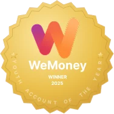
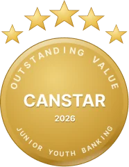
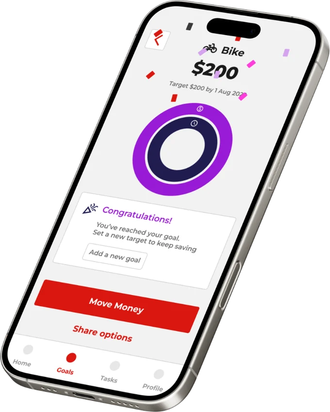
0–200 m The challenge
Westpac was the first bank in Australia. Young people still had no reason to choose it.
Westpac opened more than 200 years ago as the Bank of New South Wales. Two centuries on, it had captured millennials well and barely registered with the generation behind them.
I worked with product managers, creative strategists and UX/UI designers to go after the youth segment, with a projected 10% uplift in new customers as the goal. Every element had to carry the brand promise: Westpac is remarkably helpful, in life's moments big and small.
200–1,000 m Discover
Before designing anything, I wanted to understand a generation the bank had never researched.
I led the research with a clear framework: a 5 C's analysis, a SWOT, a competitor review and 18 one-to-one interviews, with 60 young people aged 12 to 18 informing the work. A few findings shaped everything that followed. 59% had hit money worries, most parents banked with CBA or ANZ, and Gen Z favours bite-sized, expressive, social content.
What young people told us
How do you receive this money?
Bars scaled to the top answer. The long tail of single answers told the real story: parents when I ask, youth allowance (Centrelink), working for a parent, chores, and don't get any.
Do you have a bank account? Who opened it?
How much money do you receive each week?
Where does any money you have or earn usually go?
Bars scaled to the top answer.
Even among the kids who saved, nearly half still kept their cash in a piggy bank instead of a usable account. That was the opening: make the bank the obvious, rewarding home for their money.
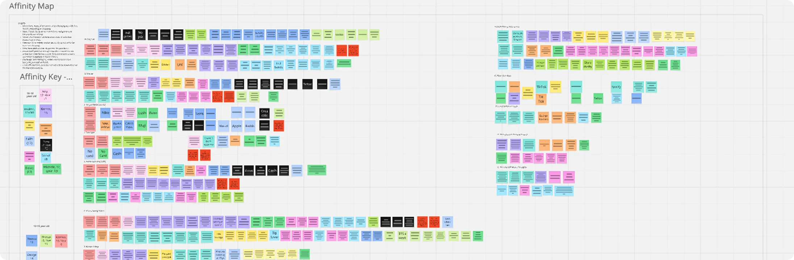
1,000–4,000 m Define
Three people, one shared need: money that feels manageable.
The research gave me three people to design for. Two of them were young and one was the parent trying to help.
Sophie
Juggling school and work and motivated to move out of home soon. She will need help managing a tighter budget if she cuts her hours.
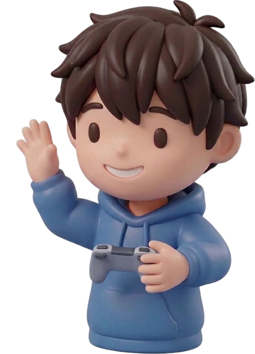
Liam
Overwhelmed balancing hobbies and homework. He wants a faster way to save for the latest gaming tech and keep up with friends.
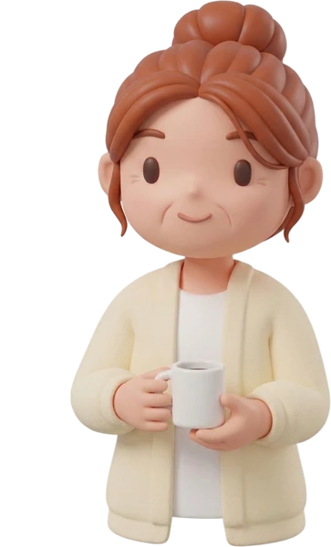
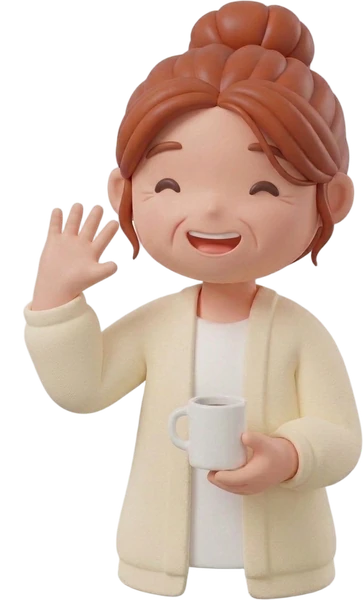
Emily
Time-poor but family-focused. She wants a simple way to support her kids' financial goals, and she worries about their future.
Three questions to design against
Win the youth market
How might we attract 10% more customers in the youth segment?
Help Sophie cope
How might we help her manage her money through high school and still enjoy life's moments?
Help Liam and Emily
How might we help them track money, work toward a goal and celebrate reaching it?
2,600 m Develop
Then we got a lot of ideas on the table and narrowed them to a minimum viable product.
I facilitated a remote co-design workshop for Westpac on Miro. We ran Crazy 8's, then voted the features onto a high-value, low-effort quadrant. The features fell into six categories.
Tasks
Simple to-dos that build money habits.
Mailbox and notifications
Timely nudges, surfaced on the homepage.
Customizability
Self-expression with characters and emojis.
Rewards hub
Wins and incentives that keep momentum.
Digiwallet
Everyday payments, expenses and budgeting.
Goals
Visible targets to save toward.
Low-fidelity wireframes
From the voted features and user flows, I built low-fidelity wireframes for the core screens. The team then expanded them into mid-fidelity together.
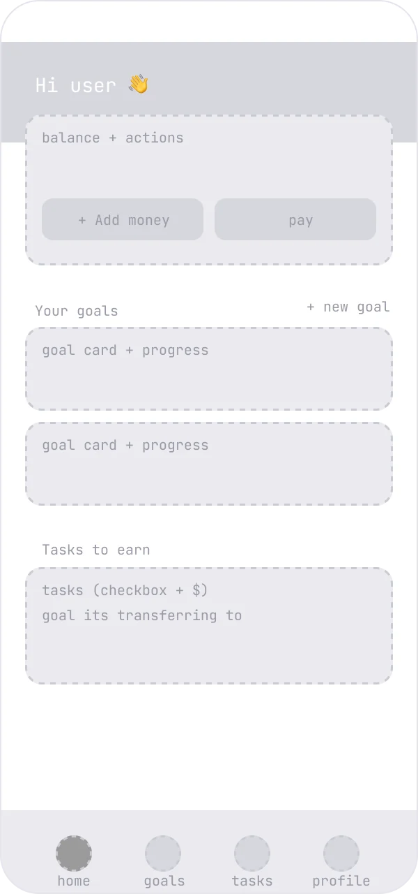
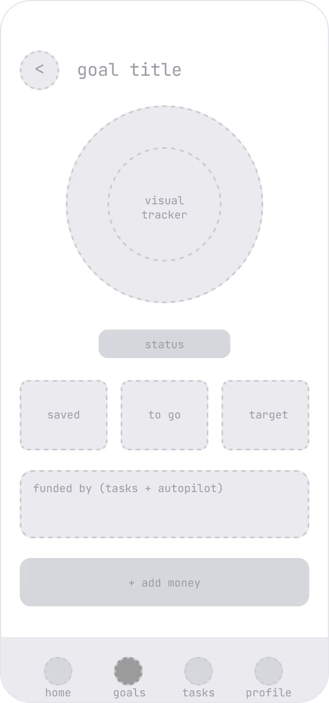
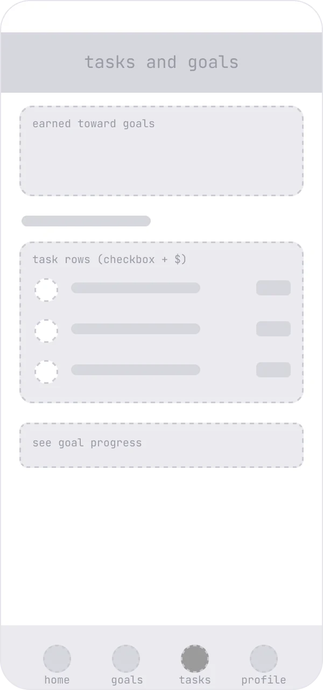
4,000–6,000 m What we shipped
A goal-based youth bank, shipped to production.
The first slice was Savings Goals for your child. Pocket money became a goal that a parent and child share.
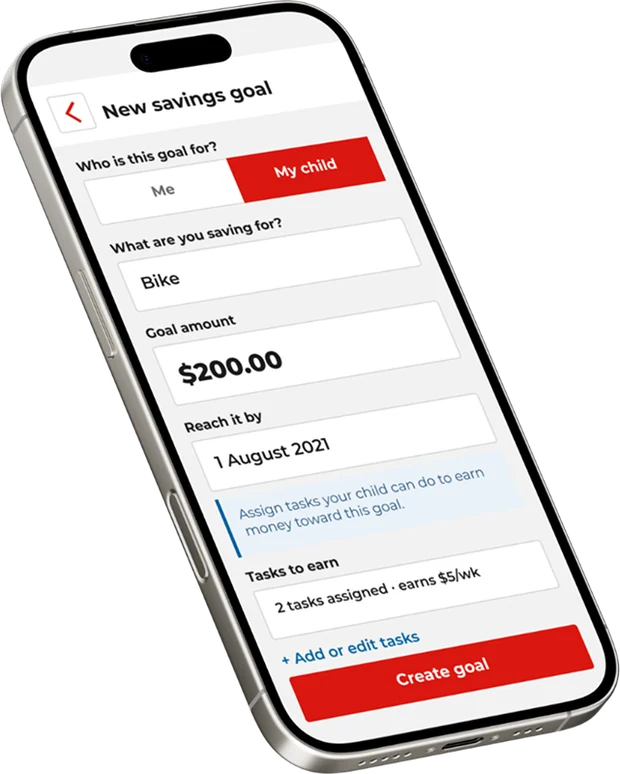
01 Shipped
Set up Savings Goals for your child
A parent creates a goal, sets the amount and date, then assigns tasks the child completes to earn money toward it.
02 Shipped
A visual goal progress tracker
An outer ring shows how much is saved and an inner ring shows how much time has passed. A young saver can see at a glance whether they are on track.
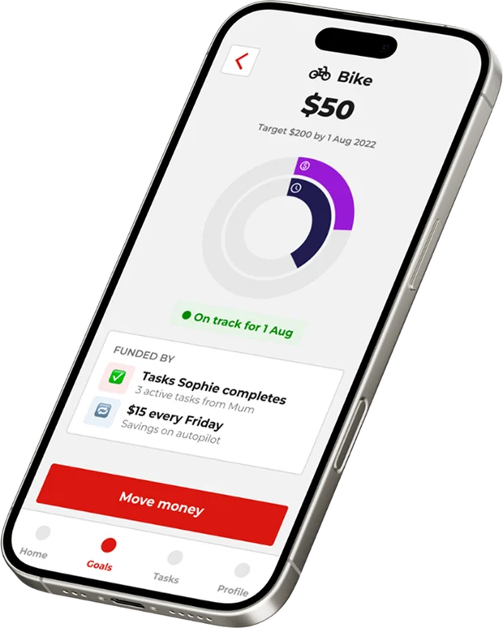
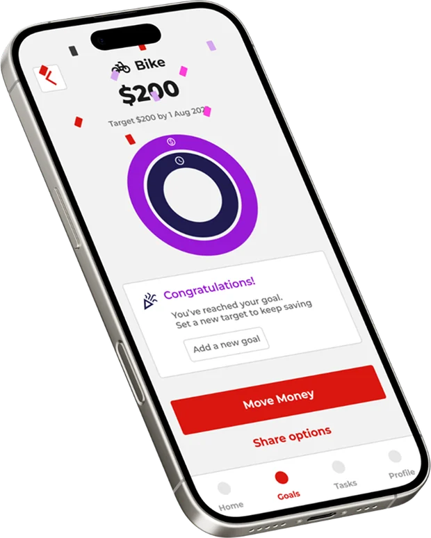
03 Shipped
A confetti moment at the finish line
Reaching a goal sets off a burst of confetti and a warm prompt to set a new target. It is a small celebration that makes saving feel worth it.
04 Shipped
Savings on autopilot
Recurring transfers move money to each goal every pay day, with tips on how much you can realistically afford to save.
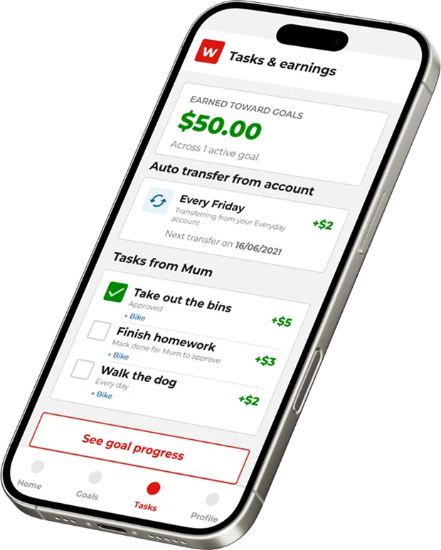
5,400 m Early signals
The early read on the first 90 days.
I want to be upfront about these numbers. They are illustrative post-launch signals, representative of the early read. The formal post-implementation study was the agreed next step.
Of new youth accounts created a Savings Goal within 90 days
Of parent-assigned tasks were completed, each moving money into a goal
Deposit frequency for accounts with a goal, against those without
Of goal-holders turned on savings autopilot
Average active goals per engaged saver
Lift in parents returning weekly when a child had a goal
Illustrative post-launch signals, representative of the early read. Not a formal study.
Years later, the work won awards.
The youth savers goals initiative went on to win two awards.
Canstar's Outstanding Value
For Junior and Youth Banking, 2024 to 2026
WeMoney Winner 2025
For Youth Account of the Year
6,000 m + What's next
We shipped the loop that mattered, then stopped to learn.
A first slice only works if you are honest about what you left out. Some of it was held back on purpose. The rest waits on research.
Held out of scope, on purpose
- The full wallet, payments and cards.
- Account opening and parental consent at scale.
- A broader rewards marketplace.
- Social and expressive features the co-design surfaced.
Pending post-implementation research
- Run the formal study to confirm the signals.
- Test friction in goal setup and the parent-task loop.
- Measure whether the habit holds past the first goal.
- Use the findings to refine, then expand the flows once the youth market is proven.